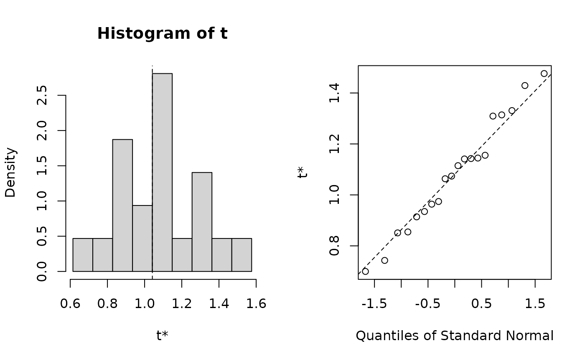

Given an internal mirt object estimate the bootstrapped standard errors. It may
be beneficial to run the computations using multi-core architecture (e.g., the parallel
package). Parameters are organized from the freely estimated values in mod2values(x)
(equality constraints will also be returned in the bootstrapped estimates).
Arguments
- x
an estimated model object
- R
number of draws to use (passed to the
boot()function)- boot.fun
a user-defined function used to extract the information from the bootstrap fitted models. Must be of the form
boot.fun(x), wherexis the bootstrap fitted model under investigation, and the return must be a numeric vector. If omitted a default function will be defined internally that returns the estimated parameters from themodobject, resulting in bootstrapped parameter estimate results- technical
technical arguments passed to estimation engine. See
mirtfor details- ...
additional arguments to be passed on to
boot(...)and mirt's estimation engine
References
Chalmers, R., P. (2012). mirt: A Multidimensional Item Response Theory Package for the R Environment. Journal of Statistical Software, 48(6), 1-29. doi:10.18637/jss.v048.i06
Author
Phil Chalmers rphilip.chalmers@gmail.com
Examples
# \donttest{
# standard
mod <- mirt(Science, 1)
#>
Iteration: 1, Log-Lik: -1629.361, Max-Change: 0.50660
Iteration: 2, Log-Lik: -1617.374, Max-Change: 0.25442
Iteration: 3, Log-Lik: -1612.894, Max-Change: 0.16991
Iteration: 4, Log-Lik: -1610.306, Max-Change: 0.10461
Iteration: 5, Log-Lik: -1609.814, Max-Change: 0.09162
Iteration: 6, Log-Lik: -1609.534, Max-Change: 0.07363
Iteration: 7, Log-Lik: -1609.030, Max-Change: 0.03677
Iteration: 8, Log-Lik: -1608.988, Max-Change: 0.03200
Iteration: 9, Log-Lik: -1608.958, Max-Change: 0.02754
Iteration: 10, Log-Lik: -1608.878, Max-Change: 0.01443
Iteration: 11, Log-Lik: -1608.875, Max-Change: 0.00847
Iteration: 12, Log-Lik: -1608.873, Max-Change: 0.00515
Iteration: 13, Log-Lik: -1608.872, Max-Change: 0.00550
Iteration: 14, Log-Lik: -1608.872, Max-Change: 0.00318
Iteration: 15, Log-Lik: -1608.871, Max-Change: 0.00462
Iteration: 16, Log-Lik: -1608.871, Max-Change: 0.00277
Iteration: 17, Log-Lik: -1608.870, Max-Change: 0.00145
Iteration: 18, Log-Lik: -1608.870, Max-Change: 0.00175
Iteration: 19, Log-Lik: -1608.870, Max-Change: 0.00126
Iteration: 20, Log-Lik: -1608.870, Max-Change: 0.00025
Iteration: 21, Log-Lik: -1608.870, Max-Change: 0.00285
Iteration: 22, Log-Lik: -1608.870, Max-Change: 0.00108
Iteration: 23, Log-Lik: -1608.870, Max-Change: 0.00022
Iteration: 24, Log-Lik: -1608.870, Max-Change: 0.00059
Iteration: 25, Log-Lik: -1608.870, Max-Change: 0.00014
Iteration: 26, Log-Lik: -1608.870, Max-Change: 0.00068
Iteration: 27, Log-Lik: -1608.870, Max-Change: 0.00065
Iteration: 28, Log-Lik: -1608.870, Max-Change: 0.00019
Iteration: 29, Log-Lik: -1608.870, Max-Change: 0.00061
Iteration: 30, Log-Lik: -1608.870, Max-Change: 0.00012
Iteration: 31, Log-Lik: -1608.870, Max-Change: 0.00012
Iteration: 32, Log-Lik: -1608.870, Max-Change: 0.00058
Iteration: 33, Log-Lik: -1608.870, Max-Change: 0.00055
Iteration: 34, Log-Lik: -1608.870, Max-Change: 0.00015
Iteration: 35, Log-Lik: -1608.870, Max-Change: 0.00052
Iteration: 36, Log-Lik: -1608.870, Max-Change: 0.00010
booted <- boot.mirt(mod, R=20)
plot(booted)

booted
#>
#> ORDINARY NONPARAMETRIC BOOTSTRAP
#>
#>
#> Call:
#> boot.mirt(x = mod, R = 20)
#>
#>
#> Bootstrap Statistics :
#> original bias std. error
#> t1* 1.0417547 0.039756609 0.2180908
#> t2* 4.8641542 0.107617991 0.4246238
#> t3* 2.6399417 0.008343677 0.2938708
#> t4* -1.4660135 -0.044006228 0.1801285
#> t5* 1.2259618 -0.010737940 0.1673617
#> t6* 2.9240027 0.059797889 0.2816925
#> t7* 0.9011651 -0.011811056 0.1472792
#> t8* -2.2665647 0.015599564 0.2175903
#> t9* 2.2933717 -0.001395176 0.4712084
#> t10* 5.2339928 -0.006057157 0.8133609
#> t11* 2.2137728 -0.016503240 0.4009882
#> t12* -1.9637062 -0.027397765 0.3737457
#> t13* 1.0949151 0.011490687 0.2112956
#> t14* 3.3479196 -0.042309791 0.3130434
#> t15* 0.9916289 -0.020381501 0.1864301
#> t16* -1.6882599 -0.013255970 0.1565944
if (FALSE) { # \dontrun{
#run in parallel using snow back-end using all available cores
mod <- mirt(Science, 1)
booted <- boot.mirt(mod, parallel = 'snow', ncpus = parallel::detectCores())
booted
} # }
####
# bootstrapped CIs for standardized factor loadings
boot.fun <- function(mod){
so <- summary(mod, verbose=FALSE)
as.vector(so$rotF)
}
# test to see if it works before running
boot.fun(mod)
#> [1] 0.5220496 0.5844686 0.8030199 0.5410276
# run
booted.loads <- boot.mirt(mod, boot.fun=boot.fun)
#> Warning: EM cycles terminated after 500 iterations.
booted.loads
#>
#> ORDINARY NONPARAMETRIC BOOTSTRAP
#>
#>
#> Call:
#> boot.mirt(x = mod, boot.fun = boot.fun)
#>
#>
#> Bootstrap Statistics :
#> original bias std. error
#> t1* 0.5220496 0.005643174 0.08294517
#> t2* 0.5844686 -0.006140366 0.06189828
#> t3* 0.8030199 -0.006557025 0.07143835
#> t4* 0.5410276 0.011377983 0.08396097
# }